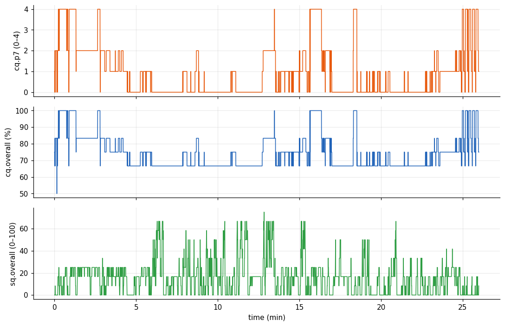
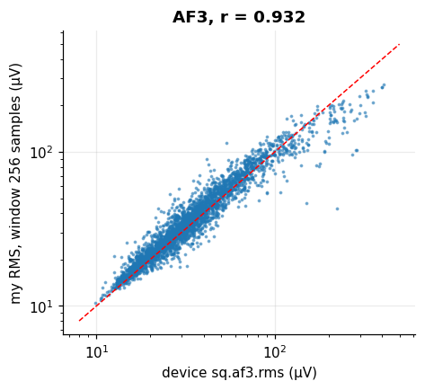
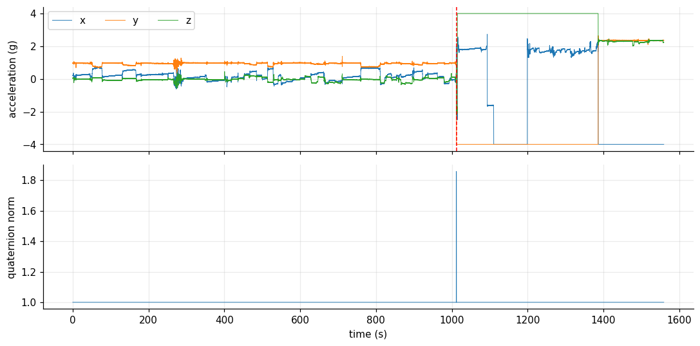
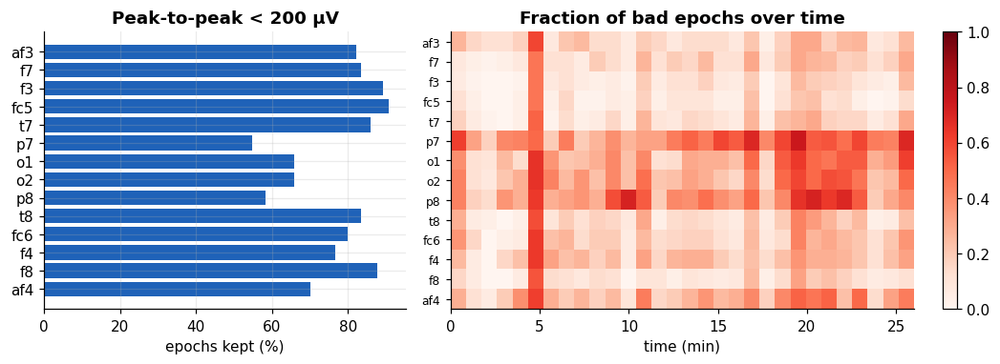

Signal quality and artifacts#
Learning objectives
- Read the two quality systems of the headset (
cqcontact quality,sqsignal quality) and explain why they can disagree. - Define the RMS amplitude and reproduce the device's
sq.*.rmsyourself. - Detect sensor faults in the motion unit (saturation) using simple checks.
- Apply an amplitude-based epoch rejection rule and report how much data survives.
Garbage in, garbage out. Before computing any statistic, quantify how much of the recording can be trusted. This chapter turns the quality columns and a few simple amplitude rules into an explicit, reproducible decision.
Contact quality over the session#
For each channel we compute the percentage of time spent at each contact grade (0 to 4).
cq = df[[f"cq.{ch}" for ch in CH]].copy(); cq.columns = CH
share = pd.DataFrame({g: (cq == g).mean() * 100 for g in range(5)})
share.columns = [f"grade {g} (%)" for g in range(5)]
share.round(1)
| grade 0 (%) | grade 1 (%) | grade 2 (%) | grade 3 (%) | grade 4 (%) | |
|---|---|---|---|---|---|
| af3 | 0 | 0 | 0 | 0 | 100 |
| f7 | 0 | 0 | 0 | 0 | 100 |
| f3 | 0 | 0 | 0 | 0 | 100 |
| fc5 | 0 | 0 | 0 | 0 | 100 |
| t7 | 0 | 0 | 0 | 0 | 100 |
| p7 | 49.9 | 23.8 | 16.4 | 0 | 9.8 |
| o1 | 0 | 0 | 0 | 0 | 100 |
| o2 | 0 | 0 | 0 | 0 | 100 |
| p8 | 0 | 0 | 0 | 0 | 100 |
| t8 | 0 | 0 | 0 | 0 | 100 |
| fc6 | 0 | 0 | 0 | 0 | 100 |
| f4 | 0 | 0 | 0 | 0 | 100 |
| f8 | 0 | 0 | 0 | 0 | 100 |
| af4 | 0 | 0 | 0 | 0 | 100 |
Thirteen channels sit at grade 4 for essentially the whole session. P7 is the exception: it spends 50% of the time at grade 0 and only 10% at grade 4. Let us see when this happens.
fig, ax = plt.subplots(3, 1, figsize=(10, 6.5), sharex=True)
ax[0].plot(t / 60, df["cq.p7"], color="#e8590c"); ax[0].set_ylabel("cq.p7 (0–4)")
ax[1].plot(t / 60, df["cq.overall"], color="#1f62b8"); ax[1].set_ylabel("cq.overall (%)")
sq_rows = df["sq.overallsensorquality"].dropna().index
ax[2].plot(t[sq_rows] / 60, df.loc[sq_rows, "sq.overallsensorquality"], color="#2f9e44")
ax[2].set_ylabel("sq.overall (0–100)"); ax[2].set_xlabel("time (min)")
plt.tight_layout(); plt.show()
print("corr(cq.overall, cq.p7) =", round(df["cq.overall"].corr(df["cq.p7"]), 3))
corr(cq.overall, cq.p7) = 1.0

The composite cq.overall follows the P7 grade almost perfectly (correlation 1.00): its variations mostly reflect the one bad electrode. The signal-based sq.overall (bottom) is low throughout, around 15 out of 100 on average. Two quality systems, two very different verdicts.
Contact quality is not signal quality#
cq measures the electrode contact; sq judges what the signal looks like. A channel with a perfect contact can still be noisy (muscle, movement). A contingency table makes this visible, here for AF3, whose cq is always 4:
# sq is available at 2 Hz: look up the cq value on the same rows
rows = df["sq.af3.signalquality"].dropna().index
pd.crosstab(df.loc[rows, "cq.af3"].rename("cq.af3"), df.loc[rows, "sq.af3.signalquality"].rename("sq.af3 grade"))
| sq.af3 grade | 0.0 | 1.0 | 3.0 | 4.0 |
|---|---|---|---|---|
| cq.af3 | ||||
| 4.0 | 87 | 1246 | 575 | 1212 |
AF3 has contact grade 4 in all 3120 half-second windows, yet its sensor-quality grade is spread over 0 to 4. Lesson: do not rely on impedance alone. In practice we combine a quality flag with an amplitude check on the data itself.
Note
The column eeg.rawcq (Chapter 2) is a multiplexed raw measurement: zero at the start, then repeating groups of values. It is not a continuous signal, so we leave it aside.
RMS amplitude#
Definition: Root-mean-square (RMS) amplitude
For \(L\) samples \(x[n]\): \(\;\mathrm{RMS} = \sqrt{\tfrac{1}{L}\sum_{n=1}^{L} x[n]^2}\). For a zero-mean signal it equals the standard deviation, and its square is the average power.
We test the hypothesis that the device's sq.*.rms is the RMS over a trailing window, and look for the window length \(L\) that matches best.
def trailing_rms(x, rows, L):
"""RMS of the L samples ending at each index in `rows`."""
return np.array([np.sqrt(np.mean(x[max(0, i - L + 1): i + 1] ** 2)) for i in rows])
x = df["eeg.af3"].to_numpy()
rows = df["sq.af3.rms"].dropna().index.to_numpy()
dev = df.loc[rows, "sq.af3.rms"].to_numpy()
res = {L: np.corrcoef(trailing_rms(x, rows, L), dev)[0, 1] for L in (64, 128, 256, 384, 512)}
print({L: round(r, 3) for L, r in res.items()})
L = max(res, key=res.get)
mine = trailing_rms(x, rows, L)
fig, ax = plt.subplots(figsize=(4.6, 4))
ax.loglog(dev, mine, ".", ms=3, alpha=.5); lim = [8, 500]; ax.plot(lim, lim, "r--")
ax.set_xlabel("device sq.af3.rms (µV)"); ax.set_ylabel(f"my RMS, window {L} samples (µV)")
ax.set_title(f"AF3, r = {res[L]:.3f}"); plt.show()
{64: np.float64(0.785), 128: np.float64(0.883), 256: np.float64(0.932), 384: np.float64(0.876), 512: np.float64(0.828)}
The best match is a window of 256 samples (2 s) with correlation 0.93; the points scatter around the identity line. Longer windows fit better, so the device is averaging over a couple of seconds. This is a good example of reverse engineering a derived variable and of the value of a correlation plus a scatter plot on log axes, since RMS spans decades.
Is the motion sensor trustworthy?#
Two physical checks: a unit quaternion must have norm 1, and an accelerometer at rest must read about 1 g.
mot = df.dropna(subset=["mot.q0"])
tm = t[mot.index]
qn = np.sqrt((mot[["mot.q0", "mot.q1", "mot.q2", "mot.q3"]] ** 2).sum(axis=1))
acc = mot[["mot.accx", "mot.accy", "mot.accz"]]
sat = (acc.abs() >= 3.99).any(axis=1)
t_sat = tm[sat.to_numpy()][0]
print(f"quaternion norm: median {qn.median():.4f}, fraction within 1±0.01: {(abs(qn - 1) < .01).mean():.3f}")
print(f"accelerometer saturated (|a| ≥ 4 g) on {sat.mean() * 100:.0f}% of motion samples, first at t = {t_sat:.0f} s")
fig, ax = plt.subplots(2, 1, figsize=(10, 5), sharex=True)
ax[0].plot(tm, acc.values, lw=.6); ax[0].set_ylabel("acceleration (g)"); ax[0].legend(["x", "y", "z"], ncol=3)
ax[0].axvline(t_sat, color="r", ls="--")
ax[1].plot(tm, qn, lw=.6); ax[1].set_ylabel("quaternion norm"); ax[1].set_xlabel("time (s)")
plt.tight_layout(); plt.show()
quaternion norm: median 1.0000, fraction within 1±0.01: 1.000 accelerometer saturated (|a| ≥ 4 g) on 35% of motion samples, first at t = 1012 s

The quaternion is valid almost everywhere, but the accelerometer hits its ±4 g limit from about 1012 s and stays stuck: after that instant the motion data are unusable (the headset was probably handled or the sensor locked up). We will therefore only use accelerometer data before that time. Always plot a sensor before trusting it.
Amplitude-based epoch rejection#
We split each channel into non-overlapping 1-second epochs (128 samples) and compute the peak-to-peak amplitude of each. An epoch is marked bad if it exceeds a threshold; a common choice in the literature is of the order of 100–200 µV, but the right value depends on the device. We use 200 µV, and show how the choice changes the result.
X = df[[f"eeg.{ch}" for ch in CH]].to_numpy().T # shape (14 channels, N samples)
n_ep = X.shape[1] // FS
E1 = X[:, :n_ep * FS].reshape(len(CH), n_ep, FS) # (channel, epoch, sample)
ptp1 = E1.max(axis=2) - E1.min(axis=2) # peak-to-peak per epoch
for thr in (100, 150, 200, 300, 500):
ok = ptp1 < thr
print(f"threshold {thr:3d} µV: kept per channel {ok.mean() * 100:4.0f}% on average, all 14 channels clean: {ok.all(axis=0).mean() * 100:4.0f}%")
THR = 200
good = ptp1 < THR
fig, ax = plt.subplots(1, 2, figsize=(10, 3.6), gridspec_kw={"width_ratios": [1, 1.6]})
ax[0].barh(CH[::-1], good.mean(axis=1)[::-1] * 100, color="#1f62b8"); ax[0].set_xlabel("epochs kept (%)")
ax[0].set_title(f"Peak-to-peak < {THR} µV")
bins = n_ep // 52
img = 1 - good[:, :bins * 52].reshape(len(CH), bins, 52).mean(axis=2)
im = ax[1].imshow(img, aspect="auto", cmap="Reds", extent=[0, t[-1] / 60, len(CH), 0], vmin=0, vmax=1)
ax[1].set_yticks(np.arange(len(CH)) + .5); ax[1].set_yticklabels(CH, fontsize=8); ax[1].set_xlabel("time (min)")
ax[1].set_title("Fraction of bad epochs over time"); ax[1].grid(False); plt.colorbar(im, ax=ax[1])
plt.tight_layout(); plt.show()
threshold 100 µV: kept per channel 29% on average, all 14 channels clean: 0% threshold 150 µV: kept per channel 61% on average, all 14 channels clean: 8% threshold 200 µV: kept per channel 77% on average, all 14 channels clean: 27% threshold 300 µV: kept per channel 89% on average, all 14 channels clean: 54% threshold 500 µV: kept per channel 96% on average, all 14 channels clean: 79%

With 200 µV, a given channel keeps on average 77% of its epochs, but only 27% of epochs are clean on all 14 channels at once. The frontal-central channels are the cleanest (91% for FC5) and the posterior ones the worst (55% for P7). The right panel shows that bad epochs come in bursts, not at random: for example a vertical stripe at about 5 minutes hits all channels at once, which points to a global event such as a movement: artifacts are not independent events, a point we will remember in Chapter 5.
Watch out
A threshold is a modelling decision. A strict rule on all channels would discard most of this recording, while a lax rule keeps contaminated data. Always report the threshold and the percentage kept, and prefer rules applied per channel or per analysis (as in the final lab, where P7 is excluded).
Exercise: Choose and defend a threshold
Compute, for thresholds from 50 to 600 µV, the fraction of epochs kept on channels F3 and O1, and plot both curves. At which threshold does each curve start to flatten?
Show solution
thrs = np.arange(50, 601, 10)
for ch in ("f3", "o1"):
plt.plot(thrs, [(ptp1[CH.index(ch)] < th).mean() for th in thrs], label=ch)
plt.xlabel("threshold (µV)"); plt.ylabel("fraction kept"); plt.legend(); plt.show()F3 flattens earlier than O1: its artifacts are fewer and its good epochs well below 200 µV.
Self-check: Channel AF3 has cq = 4 all the time but sq grades from 0 to 4. What does this show?